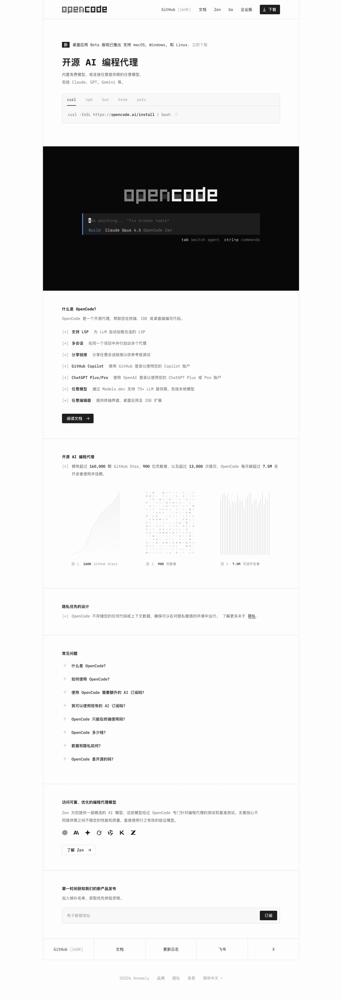

OpenCode 主题
OpenCode 的 Design.md 主题展示，围绕开发工具、AI、媒体内容、暗色界面组织页面。
AI coding platform. Developer-centric dark theme.
开发工具AI媒体内容暗色界面SaaS 产品浅色界面B2B 产品效率工具专业工具

来源
- 来源
- getdesign.md
- 镜像
- github:VoltAgent/awesome-design-md
- 网站
- https://opencode.ai/
- 详情
- https://getdesign.md/opencode.ai/design-md
色板
#201d1d: #201d1d#0f0000: #0f0000#fdfcfc: #fdfcfc#302c2c: #302c2c#424245: #424245#646262: #646262#6e6e73: #6e6e73#9a9898: #9a9898#f8f7f7: #f8f7f7#f1eeee: #f1eeee#007aff: #007aff#0056b3: #0056b3
字体
display: Interbody: Intermono: Berkeley Monohints: Inter,Berkeley Mono,Geist Mono,Geist
圆角
control: 4pxcard: 0pxpreview: 0pxpill: 9999pxsource: design-md
间距
xxs: 1pxxs: 4pxsm: 8pxmd: 12pxlg: 16pxxl: 24pxxxl: 32pxsection: 96pxsource: design-md
使用建议
建议
- 建议：Render every text role in Berkeley Mono. The single-font decision is the entire identity。
- 建议：Keep {colors.canvas} ({#fdfcfc}) as the only body background. Don't introduce gray section bands。
- 建议：Use ASCII bracket markers ({[+]}, {[-]}, {[x]}, {+}, {−}) as bullets, toggles, and section glyphs. They are the brand's only iconography。
- 建议：Anchor the dark {component.hero-tui-mockup} exactly once per landing page as the hero centerpiece. Never use the dark surface for body content。
- 建议：Reserve {colors.accent} (Apple Blue) and the rest of the semantic ramp for in-TUI states; marketing chrome stays monochrome。
避免
- 避免：introduce a sans-serif body font, a display face, or an italic style. Berkeley Mono carries everything。
- 避免：add drop shadows, gradients, or atmospheric backgrounds. The system is flat-on-cream。
- 避免：replace the ASCII bracket markers with SVG icons. The brackets are the icons。
- 避免：use the semantic accent ramp ({colors.accent}, {colors.warning}, {colors.danger}, {colors.success}) on marketing CTAs. They belong to the in-product TUI。
- 避免：pad cards with 24px+ internal padding. List rows sit at 8px vertical; FAQ rows at 12px。
查看 DESIGN.md